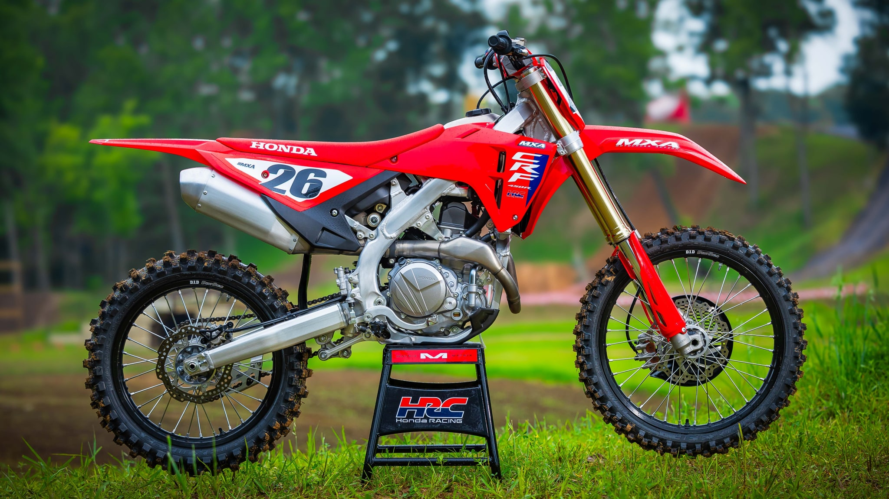

Historie Honda
Honda Motor Co. byla založena Soichiro Hondou v roce 1948 v japonském městě Hamamatsu. Soichiro Honda byl fascinován motory od dětství a jeho vize byla prostá — vyrábět spolehlivé a dostupné dopravní prostředky pro každého. První produkt firmy byl upravený válečný motor přimontovaný na jízdní kolo.
V 50. a 60. letech Honda expandovala agresivně na mezinárodní trhy. Model Super Cub z roku 1958 se stal nejprodávanějším vozidlem v historii lidstva — do dnes bylo vyrobeno přes 100 milionů kusů. Honda vstoupila na závodní scénu Grand Prix v roce 1961 a hned v roce 1961 zvítězila na závodě v Německu.
Zlomovým momentem byl model CB750 Four z roku 1969. Tento čtyřválcový stroj s kotoučovou brzdou vpředu a výkonem 67 koní zcela předefinoval pojem superbike. Stal se vzorem pro celou generaci japonských motocyklů a jeho vliv je cítit dodnes. Honda tímto modelem nastolila standard, který ostatní výrobci museli následovat.
Dnes je Honda největším výrobcem motocyklů na světě a dominuje v závodech MotoGP se svým strojem RC213V. Firma je známá svým důrazem na spolehlivost, inovace a přístupnost. Honda také aktivně rozvíjí elektrické motocykly a hybridní technologie pro budoucnost.
Novinky 2025
Honda v roce 2025 uvedla zcela nový CB1000 Hornet s přepracovaným čtyřválcovým motorem o výkonu 150 koní. Nová elektronická platforma zahrnuje 6osý IMU senzor, quickshifter, trakční kontrolu a ride-by-wire systém. Design je agresivnější a moderní oproti předchůdci.
Africa Twin dostala nový adaptivní tempomat Honda Sensing a vylepšenou elektronikou. V segmentu elektromobilů Honda představila vizi budoucích elektrických modelů pod názvem „Honda E:0 Series", které mají vstoupit na trh v příštích letech.